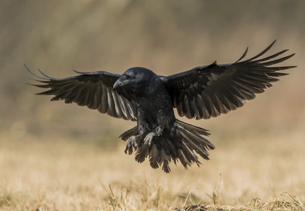

<h3>Our aim is to add images to a web page from different directories</h3>
<h3>
  like ../ is used to up in directory ./ is used to add image in same directory
</h3>
<h2>All animals and birds</h2>
<h3>loin</h3>

<h3>panda</h3>

<h3>tiger</h3>

<h3>falcon</h3>

<h3>eagle</h3>

<h3>crow</h3>
